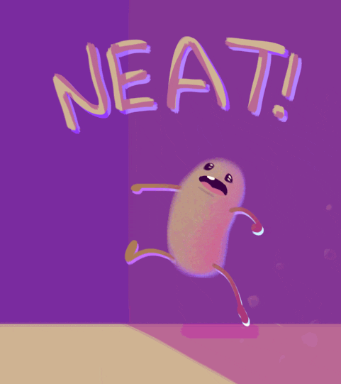

Hi, I'm Autumn.
I'm a graphic designer by trade and transitioned into UI/UX over the past seven years. I currently work as a contractor for US Citizen and Immigration Services designing apps to improve workflows.
I love to draw and paint and have been studing Illustration at the Baltimore Academy of Illustration.
I have an identical twin sister and have a 15 year old daughter, both are my BFFs. I like museums, shopping, happy hours and spending time with family and friends. I was born and raised in Baltimore.
I've spent many years designing interfaces and creating good user experience for the web. I think learning to build the sites that I'm designing would help me become a better designer. I also think learning to code will give me an opportunity to explore new careers if I decide to make a change.